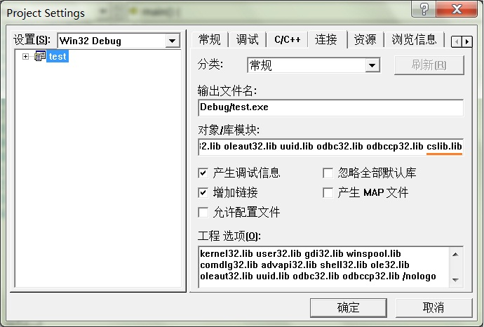

《C语言的科学和艺术》自定义库cslib在Win7和Linux下的编程环境配置
《C语言的科学和艺术》是一本优秀的经典教材，著译皆佳。 无奈本书成于1994年，其与本书配套的库文件安装成了问题，在学习的过程中如果手痒想试一下自定义库的使用，许多人按照帮助文件是无法实现的。尤其是在Windows系统下，帮助文件显示使用的是Borland C 4.0 和Turbo C 2.0 ，在Win7系统下更是连安装都成问题。更不用提在64位Windows 7操作系统了。 现有的网上资料大多语焉不详， 且错漏较多。 虽然本人是个不折不扣的菜鸟，且是业余的，在数天摸索下，终于编译成功，现在奉上详细图文步骤，以献给有需要的人。 有不当之处，欢迎指出。
一、 Win7环境下的配置
0 准备。VC6.0安装文件、本书配套源代码（可从http://bbs.bccn.net/thread-182804-1-1.html下载）；操作系统为Win7 34位。
1 安装VC++6.0， 本人安装的是VC6.0绿色版。在Win7下运行时会提示存在兼容性问题，不用管它，直接勾选“不再显示此消息”，运行程序即可。
2 复制所有standard文件夹下的.h文件到vc安装目录下的include文件夹内，譬如我的目录是“C:\Program Files\Microsoft Visual Studio\VC98\Include”。
3 将standard文件夹下的这些源文件编译成.lib静态库文件。具体步骤为：
3.1 点击VC的“文件”→“新建”，打开“新建”对话框，选择“Win32 Static Library”，工程名称为cslib，点击“确定”按钮。如下图：
3.2 不用勾选，点击“完成”。
3.3 点击“确定”。
3.4 在VC中点击“FileView”，展开“cslib files”。
3.5 在“Source Files”上点右键， 选择“添加文件到目录”。
3.6 选择standard文件夹下的所有.c文件，点确定。
3.7 同理，在“Header Files”上点右键，将standard下的所有.h文件添加进去。
3.8 点击“组建”→“组建【cslib.lib】”，就完成了组建静态库的工作了。
4 找到编译组建生成的lib静态库，我的是在“D:\VC6.0green\MyProjects\cslib\Debug”目录下。
5. 将cslib.lib重命名为cslibcs.lib，拷贝到VC的lib文件夹下。为什么要重命名呢？因为include文件夹中已经有一个CSLIB.LIB文件了。我的lib路径为“C:\Program Files\Microsoft Visual Studio\VC98\Lib”。
6. 至此我们就完成了大半工作，下面我们可以试验一下库是否可以正常使用。
6.1 新建一个源文件：test.c。
6.2 用VC打开，点击“运行”，会提示新建一个工程，确认后会进行编译，连接，会提示错误：
test.obj : error LNK2001: unresolved external symbol _GetReal Debug/test.exe : fatal error LNK1120: 1 unresolved externals
6.3 在工程设置中添加库即可：
6.4 我们试试第七章的图形库是否能成功运行，同前一步一样，新建house.c，用VC打开，点击“运行”，会提示新建一个工程，确认后会进行编译，连接，会提示错误，此后单击“工程”→“设置”菜单项，选择“连接”选项卡，在“对象/库模块”的最后添加“ cslib.lib”,点击“确定”即可。
6.5 重新编译、连接，这次没有错误，但运行后并没有出现我们预期的房子图形。检查一下，可以在项目的目录下发现一个graphics.ps文件，这其实是一种PostScript格式。
不使用静态库，直接更改include的路径及“添加文件到工程”
① 新建一个源文件：test.c，其中include路径做理性：
#include <stdio.h>
#include "..\src\standard\genlib.h"
#include "..\src\standard\graphics.h"
main()
{
InitGraphics ();
MovePen (1.5, 1.0);
DrawArc (0.5, 0, 360);
}
② 用VC打开，点击“运行”，会提示新建一个工程，确认后会进行编译，连接，会提示错误：
③ 将需要的文“添加文件到工程”即可。
二、在Linux系统中编译环境的配置
我是用虚拟机安装的乌班图系统15.10版，安装试验成功。
详细步骤如下，以下参考扩充自http://blog.sina.cn/dpool/blog/s/blog_149e725390102vtn4.html?vt=4
1. standard文件夹下的standard.shar下载到HOME文件夹，
2. 按Ctrl+Alt+T打开TERMINAL，默认当前为HOME目录，输入命令显示所有文件：
ls
3. 其中有个叫standard.shar的压缩文件，用以下命令解压：
sh standard.shar
4. 在当前目录生成cslib文件夹，其中包含了库里的各种头文件.h和实现文件.c，输入以下命令跳转到cslib目录：
cd cslib
5. 接着编译库的源文件，输入：
make
生成gccx文件和cslib.a以及其他一些.o目标文件。
6. 用超级用户操作把gccx复制到/bin/gccx （该文件夹同时被生成）：
sudo cp gccx /bin/gccx
7. 回到HOME文件夹输入：
cd
到这一步，库已经安装好了，要注意，使用库时，编译需要用gccx命令，而不是gcc命令。
------------------------------------------------------------------
8. 以下是如何编辑和编译并运行第一个简单C语言程序
首先是编辑，用nano编辑器写一个hello.c的C语言程序，在TERMINAL输入：
nano hello.c
按图输入以下C程序
打完后按CTRL+ X退出，按Y保存，并按Enter键确认文件名，退出nano回到TERMINAL。
9. 用以下命令来编译c源文件，生成hello文件。
gccx hello.c -o hello
注意：如果出现以下错误：
/bin/csh: bad interpreter: No such file or directory
那是因为缺了C-SHELL
可以输入以下命令安装：
sudo apt-get install csh
10. 成功生成hello输出文件后，打以下指令运行它：
./hello

11. 同样，用图形库时也是在当前目录生成graphics.ps文件， 可以用GV查看，输入以下命令安装：
sudo apt-get install gv
按SUPER键（指Win键或苹果电脑的Command键）打开Dash面板，搜索gv打开gv程序，找到graphics.ps文件打开。也可以在其上点击右键，选择“打开方式”，以“Print Preview”方式打开。
效果如下图：
至此，基本问题解决。
PS：用新版的Dev编辑器是不能成功编译lib库的，毕竟这种94年编写的库许多语法特性与现在的gcc大相径庭。比如，库中的genlib自己实现了bool类型，而现在bool已经是一种内置类型，有冲突了。如果心有余力，可以改写一下库的实现，以使之可以在最新编译器上使用。